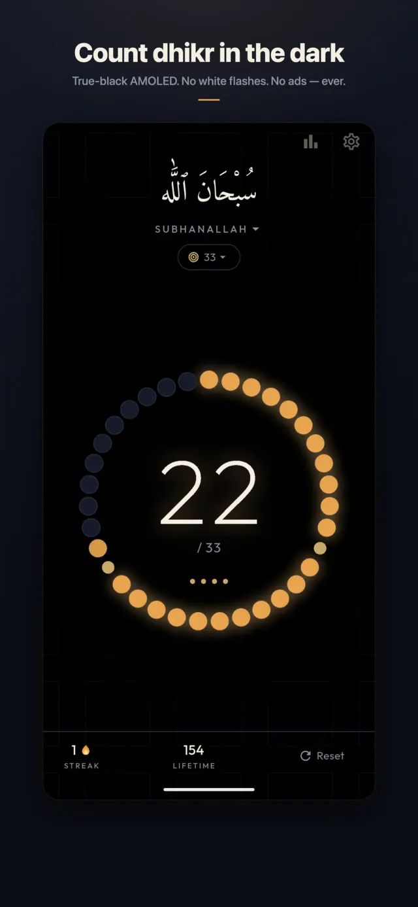
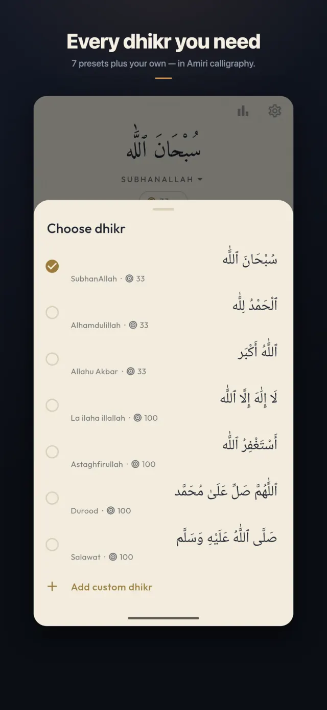
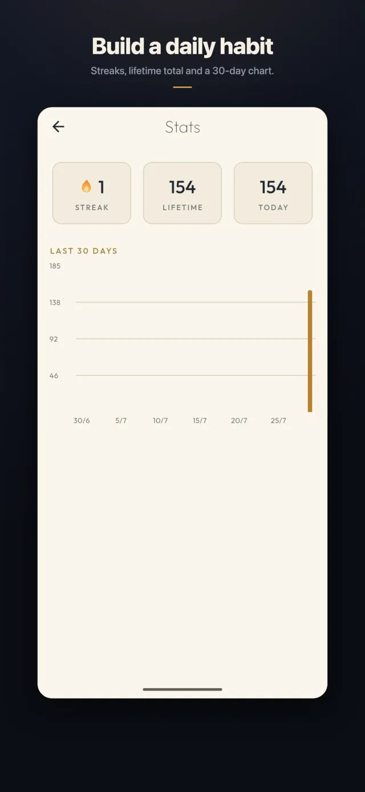
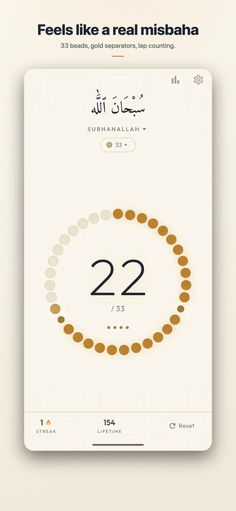

No. 02 · Devotional counter · Specification sheet
Tasbih Counter — Dhikr & Zikr
A free digital tasbih / misbaha for Android, by Forgeline.
Tasbih Counter is a free Android app for counting dhikr. Instead of a bare number on a button, it draws a 33-bead misbaha ring that fills bead by bead as you count, with gold separator beads at 11 and 22 and lap dots for completed rounds — the rhythm of a physical misbaha, kept intact on a screen. It works fully offline, shows no ads, and requires no account.
- Platform
- Android
- Price
- Free; no ads, no in-app purchases
- Current version
- 1.0.0
- Package name
- com.uzairalimurtaza.tasbih
- Developer
- Forgeline
- Get it
- Tasbih Counter on Google Play
- Privacy
- Privacy policy — no data collection
Screens




Counting
- Tap anywhere on the screen to count — no small button to find mid-dhikr.
- Volume-button counting. Either volume key registers a count, so you can count with the phone in your pocket or with your eyes closed. The system volume is left untouched while counting.
- Tiered haptics mark ordinary counts, the separators at 11 and 22, and a completed round, so you can follow your place by feel. Vibration and an optional soft click sound can each be turned off.
- Long-press to reset, with undo — an accidental reset can be taken back.
- Keep-screen-on option for longer sessions.
Dhikr library
Seven preset dhikr come built in — including SubhanAllah, Alhamdulillah, Allahu Akbar, La ilaha illallah, Astaghfirullah and Durood — each with its Arabic text, transliteration and a conventional target count. You can also add your own custom dhikr with any target. Arabic is rendered in the Amiri calligraphic typeface, bundled with the app so it displays correctly on every device.
Streaks and stats
The app keeps a daily streak, a lifetime total, today's count, and a 30-day history chart — enough to support a daily habit, and no more. All of it is stored only on your device.
Themes
Five themes: Midnight, true-black AMOLED, Emerald, Gold, and a warm paper-like Ivory. The AMOLED theme lights only the pixels it needs — no white flashes when counting in the dark.
What it deliberately is not
Tasbih Counter is a devotional object, kept plain on purpose. It has no feed, no social features, no gamification beyond the streak, no account, and no ads — nothing competing for attention with the dhikr itself. The current version does not include a home-screen widget or a Wear OS app.
Privacy
The app works entirely offline and collects no data of any kind — no account, no analytics, no tracking. Counts, streaks, custom dhikr and settings are stored locally on the device and can be erased at any time with the in-app "Reset all data" option. The full policy is published at uzairalimurtaza.github.io/tasbih-privacy.
Get the app
Tasbih Counter is available on Google Play: play.google.com/store/apps/details?id=com.uzairalimurtaza.tasbih.
Questions about the app can be sent to uzairalimurtaza@gmail.com.